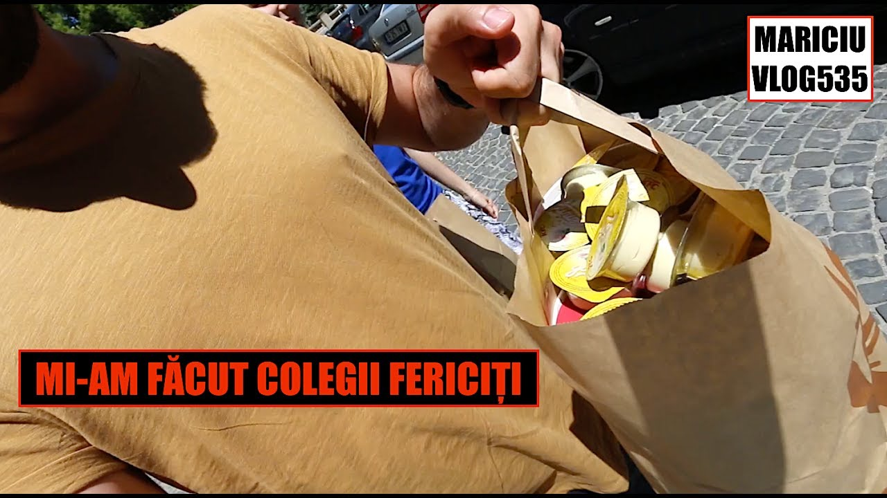

Fericiți cei curați cu inima, că aceia vor vedea pe Dumnezeu (Ι) – Chilia Buna Vestire
 Acasă Blog Secțiune Copii Cuv. Paisie Aghioritul Schitul Lacu Instrucțiuni pelerini Aplicaţii Cărți Acatistier Galerie Foto Priveghere Sf. Dimitrie 2018 2017 Bisericuța Cuviosului Paisie Aghioritul Filmări Schit Sfântul Munte Media Instagram Chilia Buna Vestire Ieșiri din criza duhovniceasca contemporana Viața Domnului Iisus Hristos Psaltica Athonita Schitul Lacu – Psaltica Sfânta și Dumnezeiasca Liturghie M-rea Simonospetra M-rea Dionysiou M-rea Meteora M-rea Vatoped Catehism Audio Live Radio Online Donații Redirecționați 3,5% Contact Search Menu Blog Articole duhovniceștiFericiți cei curați cu inima, că aceia vor vedea pe Dumnezeu (Ι)
Arhim. Efrem Filotheitul
Preacuratul și Preasfântul Duh să lumineze întunericul meu ca să vă spun câteva cuvinte despre preafrumoasa virtute a rugăciunii și a curăției sufletului.
Rugăciunea este convorbirea omului cu Dumnezeu. Dumnezeu este Duh. Și, așa cum spune Sfântul Dionisie Areopagitul, Dumnezeu este mai presus de duh. Și, prin urmare, datorită firii Sale, Dumnezeu este atât de întins, atât de revărsat peste tot, încât omul poate să fie în orice clipă împreună cu El și cu duhul credinței să-L vadă și să vorbească cu El. Nicio persoană nu ne este atât de aproape, neîncetat, așa cum este Dumnezeu.
Mare cinste este pentru un om să aibă îndrăznire și să se învrednicească să discute cu o persoană de vază aici pe pământ, pentru care se socotește important, fiindcă are această legătură și prietenie. Însă deasupra tuturor oamenilor și îngerilor este Dumnezeu. Și cu toții ne învrednicim să avem această cinste, să vorbim cu El și să-L vedem prin ochii credinței.
Toată imnografia Bisericii noastre, troparele, Slavele sunt rugăciuni. Dar mai esențială decât toate aceste rugăciuni este această mică rugăciune, care se numește Rugăciunea minții și se cuprinde în cele cinci cuvinte: „Doamne Iisuse Hristoase, miluiește-mă!”. Cu această mică rugăciune putem să comunicăm cu Dumnezeu neîncetat, neîntrerupt. Aceasta ne poruncește și Apostolul Pavel: „Neîncetat vă rugați, întru toate mulțumiți” [1] . Aceasta este voia lui Dumnezeu.
Pustnicii primelor veacuri creștine trăiau în peșteri și pustii, în părți foarte depărtate de lume. În acei ani nu existau cărți tipărite, precum astăzi, și prin urmare, nu aveau multe de citit. Dar cu ce se îndeletniceau ziua și noaptea în pustie? Aveau Universitatea Universului. De la creație urcau la contemplația Pricinuitorului a toate, Dumnezeu. Un pustnic se plimba într-o zi și a văzut o floare foarte frumoasă. A lovit-o și i-a spus: „Nu striga așa de tare!”. Prin aceasta, a vrut să arate că această floare vorbea mult despre înțelepciunea lui Dumnezeu. Așadar, dacă o floare atât de mică era atât de minunat creată, cu atât mai mult este Dumnezeu, Creatorul tuturor!
Sfinții Părinți spuneau că toate făpturile create vorbesc fiecare cu glasul său. Și ca să ajungă omul la aceasta, să asculte glasul făpturilor, trebuie să se curățească întreg sufletul său, mintea și inima prin nevoință.
Marele Arsenie era în cele lumești foarte învățat și un mare filosof. Însă apoi a mers în pustie, s-a însingurat complet și s-a nevoit cu multă asprime ca să-și curățească inima. Nu vorbea cu oameni și nu vedea pe nimeni. Și totuși acesta care fusese foarte înțelept în lume, prin nevoință și însingurare a primit și a cunoscut filosofia Duhului, care este cu neasemănare mai mare și mai duhovnicească decât cea lumească. În viața sa se spune că își ridica mâinile la rugăciune la apusul soarelui și le cobora la răsărit, atunci când soarele îi lovea obrazul cu razele sale. Toată noaptea le avea ridicate. Dar cum stăteau în aer întărite? În mod firesc este greu. Însă cu ajutorul lui Dumnezeu niciun lucru nu este de neizbutit. Mintea întreagă și inima lui Avva Arsenie se aflau în răpirea contemplației în Duhul Sfânt și era inițiat în tainele cerești; comunica nemijlocit cu Dumnezeu.
Din aceasta înțelegem că pentru a se uni cineva cu Dumnezeu esențial și cu izbândă, este nevoie să se separe puțin pe sine însuși de ceilalți oameni și de grijile lumești și în duhul liniștirii minții să poată prin rugăciune să comunice cu Izvorul oricărei fericiri, Dumnezeu. Mintea omului este cea care conduce toată lucrarea duhului său. Dacă mintea se va curăți de gândurile necurate, care o întinează, atunci și inima sa cu timpul va dobândi curăție.
„Fericiți cei curați cu inima, că aceia vor vedea pe Dumnezeu” [2] . Și fiindcă Dumnezeu nu este antropomorf, ca să poată cineva să-L vadă cu ochii trupești, El Se face cunoscut în inima omului, într-un chip tainic, într-un chip negrăit, atunci când aceasta se curățește. Când creștinul se roagă corect, cu minte nerăspândită, adică mintea lui cu smerenie este focalizată pe înțelesul cuvintelor, a rugăciunii, atunci începe să simtă roadele rugăciunii. Și roada unei rugăciuni smerite este să ajungă omul la umilință și lacrimi sau la pocăință sau la multă bucurie și dragoste de Dumnezeu.
Părinții niptici ai Bisericii noastre ne vorbesc foarte mult despre rugăciunea minții. Ne spun că niciun mijloc nu ne curățește mintea, precum trezvia. Când mintea ia aminte și prin trezvie este izbăvită de răspândire și de atacurile gândurilor rele, inima se slobozește de patimi. Când patimile sunt înrădăcinate în inima omului și rădăcinile patimilor s-au împleticit foarte tare, atunci curățirea este foarte grea.
Imaginația este tentaculul care se întinde urât peste tot. Este ochiul minții care intră în niște tărâmuri de necrezut, cele mai îndrăznețe. Și de acolo începe fapta nelegiuită. Cele mai mari păcate se săvârșesc din pricina imaginației. Toate câte cele cinci simțuri ale trupului le-au adunat în minte – persoane, lucruri, imagini necurate – toate acestea sunt otravă ce se întinde în toată ființa omului. Astfel devine cineva pătimaș, necurat și nu are îndrăznire înaintea lui Dumnezeu.
Dacă omul duhovnicesc nu înfrânează această simțire a imaginației, nu poate dobândi o stare duhovnicească. Trezvia este cea care păzește imaginația, interzice imaginile ce nasc gândurile rele și păstrează mintea curată. Când nu există imagini și omul dă o lucrare corectă minții prin rugăciune, atunci se face comunicarea corectă a minții cu Dumnezeu. Lupta nu este ușoară, fiindcă mintea nu oprește niciodată lucrarea ei. Însă ceea ce îi vom da, aceea va lucra în noi. Este ca moara care lucrează. Dacă morarul aruncă grâu, grâu va măcina. Dacă merge cineva și aruncă gunoaie, gunoaie va măcina. Prin urmare, rezultatul va fi pe măsura a ceea ce îngăduim minții să primească în sine.
De aceea, este nevoie de a ne păzi mintea cu rugăciunea, cu frica lui Dumnezeu și cu înțelepciune, astfel încât atunci când suntem provocați de gândurile rele și imaginile păcătoase, să avem adunată toată atenția minții. Căci, atunci când le primim, se creează multe lucruri urâte, care ne răscolesc lăuntric. Dimpotrivă, atunci când le împiedicăm, nu există nicio neliniște în omul cel lăuntric. Când mintea se va păstra curată și vor fi respinse diavolul și păcatul, atunci casa lăuntrică a inimii și a sufletului nostru va fi într-o stare bună.
Ca de exemplu, atunci când ușa casei noastre dă în drum, în bulevard, oricine poate bate la ușă; chiar și un tâlhar și să ceară să intre înăuntru. Când nu-i deschidem, nu-i răspundem, nu se întâmplă nimic grav. Dacă însă nu luăm aminte și nu cercetăm să vedem cine bate la ușă sau ne înșeală prin cuvintele lui și îi deschidem, de acolo încolo încep osteneala și lupta ca să-l scoatem afară din casă. Iar dacă-l lăsăm să înainteze și mai înăuntru, osteneala va fi și mai mare. Se poate ca acest om rău să-l lege pe stăpân de mâini și de picioare și să devină stăpânul casei.
Tot la fel și cu gândul cel rău. Bate la ușa minții și vrea să intre înăuntru. Când nu avem luare-aminte și începem să discutăm cu el, este ca și cum i-am deschide ușa. Ne vine un gând păcătos în orice situație. Când nu avem atenție, nu avem trezvie, nu avem paza minții, lăsăm gândul să intre înăuntru și ne va crea imagine, persoană, lucru, scenă ș. a. m. d. Și toate cele pe care le-a văzut omul sau le-a gustat sau le-a pipăit în trecut cu cele cinci simțuri încep să rănească mintea. Și dacă este din nou nepăsător, războiul devine mai puternic. Va irita inima și va produce întinare. Când omul dă drept diavolului printr-o oarecare patimă, cu greu va întoarce diavolul acel drept. Se răzbună cu multă mânie, fiindcă spune: „Eu am făcut atâta osteneală ca să câștig drept în acest suflet”. Atunci lupta pentru curățirea sufletului este mare.
[1] I Tesaloniceni 5, 18.
[2] Matei 5, 8.
Share:
Click to share on Facebook (Opens in new window) Click to share on WhatsApp (Opens in new window) Click to share on Twitter (Opens in new window)Related
03/05/2018 / by admin https://marturieathonita.ro/wp-content/uploads/2018/05/child-praying.jpg 576 867 admin https://marturieathonita.ro/wp-content/uploads/2019/01/logo-marturie-300x138.png admin 2018-05-03 09:31:54 2018-05-03 09:31:54 Fericiți cei curați cu inima, că aceia vor vedea pe Dumnezeu (Ι)Abonare Newsletter
Cele mai citite postări
Alte Site-uri
· Școala Gimnazială Anastasia
· Pelerinaj Sfântul Munte Athos
· Asociația Românilor Care se Ajută
· Athos Vestments
· Comuniune Ortodoxă
· Creștinism Ortodox
·Departamentul Ortodox de Defensivă
·Despre Vremurile din Urmă
·Editura Evanghelismos
·Familia Ortodoxă
·Filocalia Audio
·Gânduri din Ierusalim
·Libraria Online "Ortodoxia"
·Muntele Athos
·Pelerin Ortodox
·Pelerinaj Athos
·Sfântul Munte Athos
·Sfântul Nectarie
·Viețile Sfinților